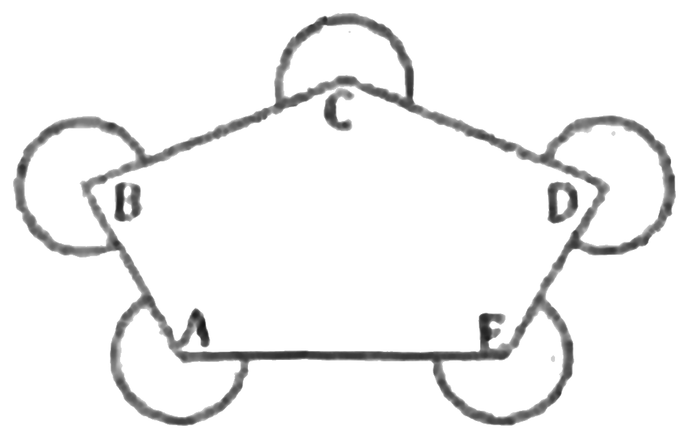

לכל מספר חיובי a הוגדרה הפעולה # כך: #(a) = a² − 1. נתונים שני מספרים טבעיים x ו־y.
איזו מהטענות הבאות נכונה בהכרח?
נתונות 2 קבוצות של מספרים:
קבוצה ראשונה – 78 , 87 , 95
קבוצה שנייה – 66 , 105 , 130
a מייצג את מספר הגורמים הראשוניים שמופיעים רק פעם אחת במספרים שבקבוצה הראשונה.
b מייצג את מספר הגורמים הראשוניים שמופיעים פעמיים במספרים שבקבוצה השנייה.
a − b = ?
יובל יצא לריצת הר ועמק שאורכה 12 שעות. אחת ל־12 דקות הוא לוגם מבקבוק המים שלו, אחת לרבע שעה הוא חולף על פני רץ אחר ואחת ל־45 דקות הוא עובר בתחנת רענון.
כמה פעמים במהלך הריצה חלף יובל על פני רץ אחר בתחנת רענון תוך כדי לגימה מבקבוקו?
נתון: a + b מתחלק ב־3 ללא שארית. c − b מתחלק ב־3 ללא שארית.
איזה מהביטויים הבאים בהכרח מתחלק ב־3 ללא שארית?

בסרטוט שלפניכם מתומן משוכלל שצלעו 2 ס"מ.
על פי נתונים אלו ונתוני הסרטוט, מה גודלו של השטח הכהה (בסמ"ר)?
בכיתה 10 בנים ו־10 בנות. המורה מעוניינת, לצורך תמונת סוף השנה, לסדר את כל הבנים בשורה מימינה ואת כל הבנות בשורה משמאלה.
בכמה דרכים יש למורה לסדר את התלמידים לתמונה הכיתתית?
A, B ו־C הן אותיות המייצגות ספרות שונות בין 0 ל־9. נתון: AA + CB = CBA
A = ?

בסרטוט שלפניכם מחומש ABCDE. על קודקודי המחומש הניחו את מרכזיהם של חמישה מעגלים חופפים שרדיוסם r.
על פי נתונים אלו ונתוני הסרטוט, מה סכום השטחים הכהים?
נתון: A = |x + y||x − y| , x ≠ y
מה מהבאים נכון בהכרח?
בכד 80 כדורים. כל אחד מהכדורים צבוע בלפחות אחד מהצבעים הבאים – כחול, ירוק ואדום. ידוע כי 40% מהכדורים צבועים רק בכחול, וכי 50% מהכדורים הנותרים אינם צבועים בירוק. אם ידוע כי מספר הכדורים הצבועים לא רק באדום גדול ממספר הכדורים הצבועים רק בכחול, כמה כדורים, לכל היותר, צבועים רק בירוק?